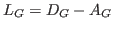
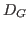
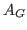
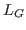

Solving Laplacian linear systems is an important task in a variety of practical and theoretical applications. This problem is known to have solutions that perform in linear times polylogarithmic work in theory, but these algorithms are difficult to implement in practice. We examine existing solution techniques in order to determine the best methods currently available and for which types of problems are they useful. We perform timing experiments using a variety of solvers on a variety of problems and present our results.
The Laplacian matrix of a weighted, undirected graph  is defined as
is defined as

, where
is the diagonal matrix containing the sum of incident edge weights and
is the weighted adjacency matrix.
is a symmetric, positive semidefinite, diagonally dominant M-matrix, with a nullspace containing the constant vector. Solving linear systems on the Laplacians of structured graphs, such as two and three dimensional meshes, has long been important to application domains such as finite element analysis and image processing. More recently, solving linear systems on the Laplacians of large graphs without mesh-like structure has emerged as an important computational task in network analysis with applications to graph sparsification and spectral clustering.To our knowledge there is not a comprehensive experimental study of available solvers. Our goal is to provide an initial understanding of available solvers, and to determine where ideas from more theoretical solvers could be leveraged to make improvements in practice. Towards this goal we must select an implementation of existing solvers, gather a set of relevant test problems, and select a set of performance metrics for comparing solver performance. We choose to use the Trilinos software package and its implementation of preconditioned conjugate gradient and multilevel methods. We use a variety of mesh-like and irregular graphs from the University of Florida sparse matrix collection, a set of generated Block Two-Level Erdös Rényi graphs, and a set of graphs generated from image segmentation problems. For each solver we examine number of iterations, setup time, solve time, and memory usage.
We examine each solver's performance on each test set and present our results. Of interest, we find that relative solver behavior is consistent within each test set, but varies between the test sets. Cheap to apply preconditioners such as Jacobi scaling work surprisingly well on graphs with irregular degree distribution. We hope to update these results with new test data, solvers, and analysis through community feedback.